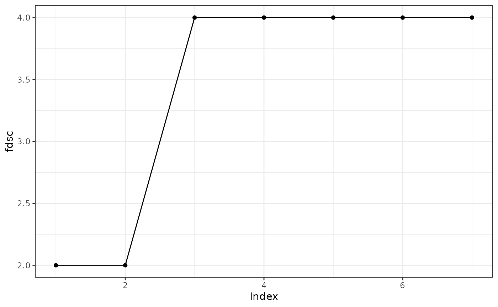

Plotting Summaries of Control Polygon Reductions
Source:R/plot.cpr_summary_cpr_cpr.R
plot.cpr_summary_cpr_cpr.RdPlotting Summaries of Control Polygon Reductions
Examples
set.seed(42)
x <- seq(0 + 1/5000, 6 - 1/5000, length.out = 100)
bmat <- bsplines(x, iknots = c(1, 1.5, 2.3, 4, 4.5), bknots = c(0, 6))
theta <- matrix(c(1, 0, 3.5, 4.2, 3.7, -0.5, -0.7, 2, 1.5), ncol = 1)
DF <- data.frame(x = x, truth = as.numeric(bmat %*% theta))
DF$y <- as.numeric(bmat %*% theta + rnorm(nrow(bmat), sd = 0.3))
initial_cp0 <-
cp(y ~ bsplines(x, iknots = c(1, 1.5, 2.3, 3.0, 4, 4.5), bknots = c(0, 6))
, data = DF
, keep_fit = TRUE # default is FALSE
)
cpr0 <- cpr(initial_cp0)
#>
|
| | 0%
|
|========== | 14%
|
|==================== | 29%
|
|============================== | 43%
|
|======================================== | 57%
|
|================================================== | 71%
|
|============================================================ | 86%
|
|======================================================================| 100%
s0 <- summary(cpr0)
plot(s0, type = "rse")
plot(s0, type = "rss")
plot(s0, type = "loglik")
plot(s0, type = "wiggle")
plot(s0, type = "fdsc")

plot(s0, type = "Pr(>w_(1))")
#> Warning: Removed 1 row containing missing values or values outside the scale range
#> (`geom_point()`).
#> Warning: Removed 1 row containing missing values or values outside the scale range
#> (`geom_line()`).